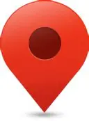

<!DOCTYPE html> 
<html lang="en">

</html>
<head>
    <meta charset="UTF-8">
    <meta name="viewport" content="width=device-width, initial-scale=1.0">
    <link rel="stylesheet" href="css/style.css">
    <title>A Propos</title>
</head>
<body>
    <div class = "Top">
        
        <button class="styled" type="button" onclick="window.location.href='Enjeux.html';">Enjeux</button>
        <button class="Home" type="button" onclick="window.location.href='index1.html';">Home</button>
        <button class="AboutUs" type="button" onclick="window.location.href='AboutUs.html';">A propos</button>
    </div>
    <h1 class="AboutUsTitre">Qui Sommes Nous ?</h1>
    <p class="AboutUsIntro">Nous sommes un projet lycéen de terminale NSI et nous avons pour objectif de combattre le mal qui sévit dans nos rues et dans nos campagnes.</p>
    <h3 class="AboutUsQuestion">Quel est ce mal ?</h3>
    <p class="AboutUsDef">Ce mal est celui causé par nos propres dirigeants, afin de pouvoir maintenir la sécurité dans la rue a défaut
                          de maintenir notre vie privé.
                          En effet, il s'agit bien là de la VSA ainsi que les caméras présentes dans nos rues.
                          Grâce à ce projet communautaire vous pourrez coopéerer avec de bons citoyens francais, afin de localiser le
                          plus de ces caméras. Cela afin de préserver notre vie privée tout en connaissant les endroit où nous sommes en dangers.</p>
    <h3 class="AboutUsVsaTitre"> La VSA c'est quoi ?</h3>
    <video class="AboutUsVideo" width="800" height="400" controls>
    <source src="VSADef.mp4" type="video/mp4">
    </video>

</body>